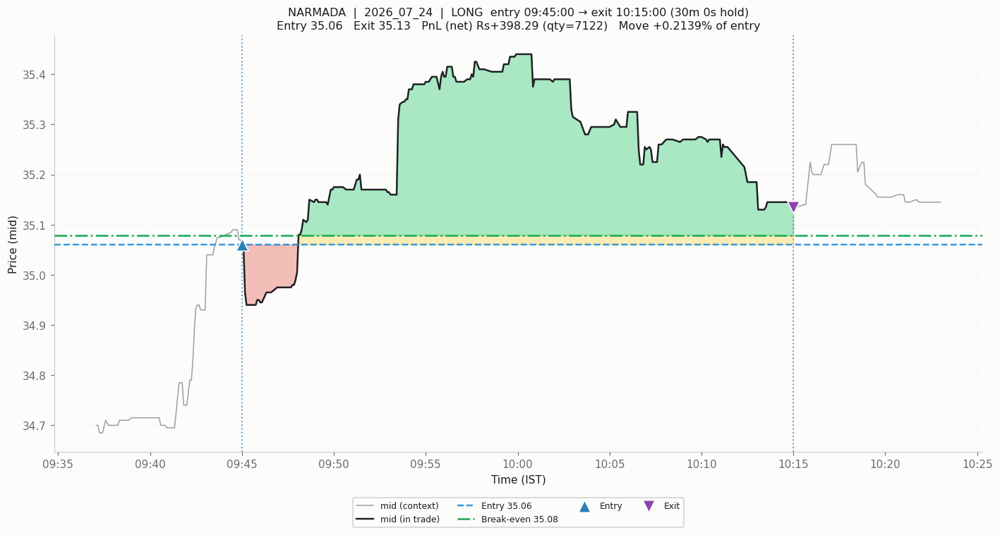
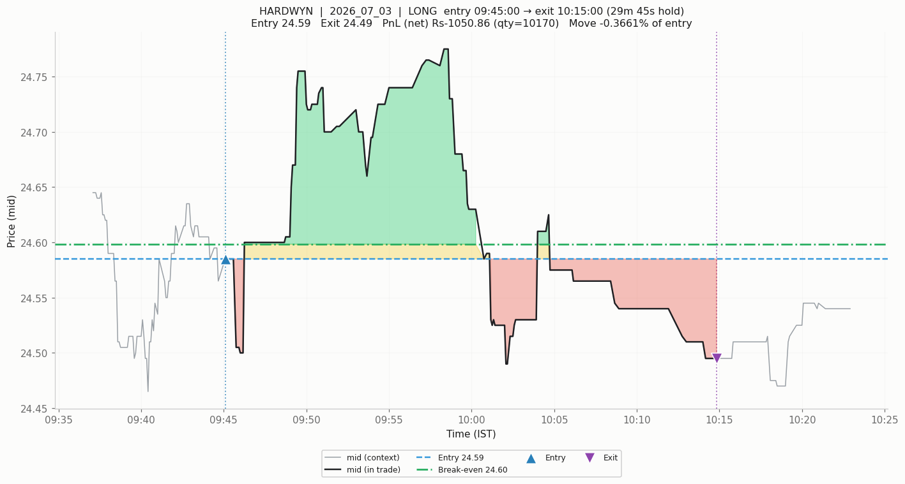
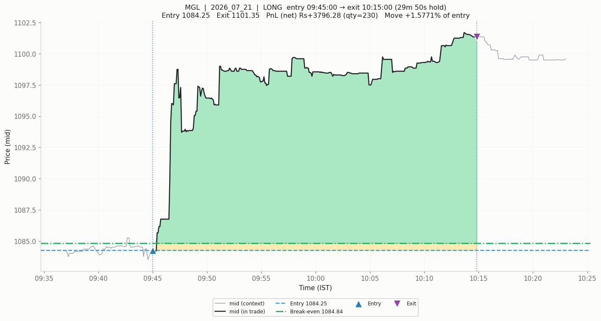
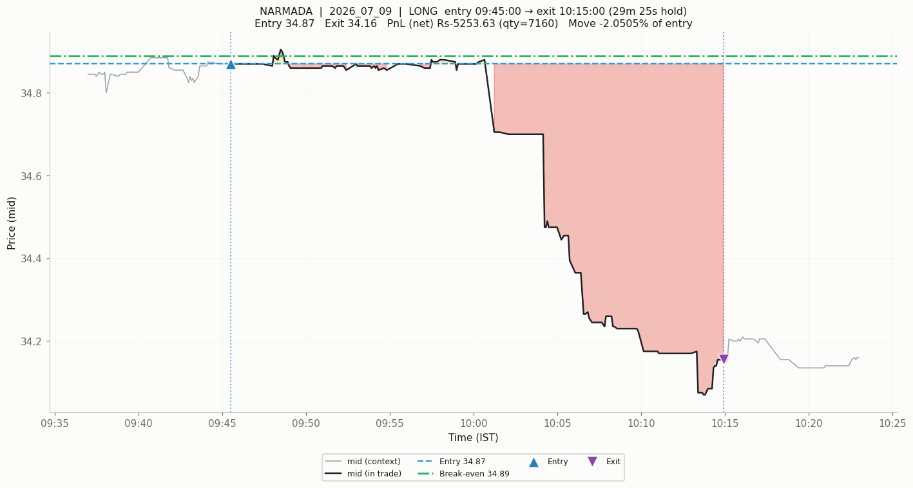

A 5× improvement in prediction bought exactly zero rupees
I doubled the training data for a multimodal market-state transformer. Every seed went from unstable to consistently predictive, the headline metric rose fivefold, and the book lost more money than before. The gap between those two facts turned out to be the most instructive thing in the project.
Here is the result, stated as baldly as I can manage. I extended the training data for a market-state transformer from 18 days to 37. The model's information coefficient — the rank correlation between its predictions and forward returns, and also its training objective — went from +0.0105 to +0.0535. Seeds with a negative IC went from five out of twelve to zero out of twelve. The seed standard deviation more than halved. By every measure of predictive quality, the model was fixed.
The book lost ₹38,620, having previously lost ₹31,760. Zero of twelve seeds were profitable, before and after.
Meanwhile a zero-parameter baseline — fade the opening move, no fitting, no features, no model — made ₹17,610 over the same period.
That gap is the subject of this post. As with the exit-model study, the ideas and the direction here are mine, while the implementation was executed with Claude Code CLI. This project is where that arrangement was most severely tested, because the thing that went wrong was not a bug. Everything was computed correctly. The measurements were of the wrong quantity, and no amount of careful engineering catches that.
The setup
The model reads the first thirty minutes of each trading day as a sequence of sixty 30-second bars, across four declared modalities: economic (price and return shape), microstructural (tick and spread behaviour), flow, and reliability. A small multimodal transformer — 110,850 parameters, four linear patch encoders feeding a three-layer fusion transformer — makes a directional forecast at 09:45 for the move to 10:15. The book buys the top eight names each day at ₹250,000 notional each.
Universe is MIS-eligible NSE equities, ETFs excluded, about 1,049 names a day. Training on May and June 2026; July held out and touched as little as possible. Every rupee figure passes through a validated cost library rather than a rule-of-thumb.
The training objective is ic_loss: batch-level negative rank correlation over a day's cross-section. Note that now. It is the whole story.
What the metric was measuring
The critical table is this one, and it took embarrassingly long to compute:
| Signal | Holdout IC | Top-8 median forward move | Cost wall | Book |
|---|---|---|---|---|
| Transformer (37d ensemble) | +0.0535 | +2.05 bps | 12.03 bps | −₹38,620 |
| Fade the opening move (0 params) | +0.0329 | +11.21 bps | 12.24 bps | +₹17,610 |
The transformer has the higher information coefficient. Its traded names move about a fifth as far. Same cost wall to within a fifth of a basis point, opposite outcomes.
Once you see it, the mechanism is not subtle at all. IC is graded across all 1,049 names in the universe. The book trades eight. Improving the ordering in the middle of the distribution — which is where most of the names are, and therefore where most of the gradient goes — raises IC substantially and changes nothing whatsoever about which eight names get bought.
Worse, IC is a rank correlation. It asks whether names are in roughly the right sequence. It is completely indifferent to whether the name ranked first moves +50 bps or +1.3. P&L cares about nothing else.
And +1.3 bps is approximately what the model delivered. Its top-3% picks had a median forward return of +1.3 bps — correctly above the bottom-3% at −12.0 bps, so the ranking is real — against a round-trip cost wall of 12.03 bps.
The arithmetic on a single trade at the book's own median reproduces the entire book:
| Step | bps | ₹ |
|---|---|---|
| Move the top-3% picks actually deliver (median) | +1.30 | +₹32.49 |
| Statutory charges, round trip | −5.39 | −₹134.80 |
| Spread, half on each leg | −6.59 | −₹164.70 |
| Net | −10.68 | −₹267.01 |
The book's realised figure is −₹268.19 per trade. The toy trade lands within ₹1.18 of it. Nothing exotic is happening — the loss really is this simple, and no amount of ranking skill addresses it. To turn that trade positive, the median selected name would need to move +12.0 bps instead of +1.3, roughly a ninefold increase in delivered edge. A fivefold IC gain delivered none of it.
Three explanations I was able to kill
The value of the exercise was in what it ruled out, and each of these was a live hypothesis I held at some point.
"The model is too weak." Dead. It predicts consistently now — twelve of twelve seeds positive, tight spread. Prediction is not the binding constraint.
"The model needs more data." More interesting than it looks. The previous conclusion had been that the model was not data-starved, based on a learning curve built by subsampling within the same 18 days: 6, 9, 13, 18 days all gave roughly flat IC. Adding 19 genuinely new days moved the mean per-seed IC fivefold, which falsifies that conclusion outright.
But the follow-up test is the one that taught me something. Training on May alone — 19 days, and fewer examples than June alone — gives a mean per-seed IC of +0.0600 against June's +0.0253, with the seed standard deviation collapsing from 0.0373 to 0.0097. May-only even beats May-and-June combined. It was never a volume problem. June was simply an unrepresentative training month, and the original learning curve had been computed by resampling inside it.
The transferable lesson, which I now apply reflexively: a learning curve built by subsampling within one regime measures how much of that regime you need, not how much data you need. It cannot distinguish "more days" from "different days," and it will look reassuringly flat in precisely the case where a second month would fix everything.
"The model buys names it cannot afford to trade." This was my favourite hypothesis and it was cleanly wrong. The 18-day model did load on microcaps — median selected name ₹29.83 with a 10.01 bps spread against a 15.44 bps wall, a real 3.2 bps handicap versus the baseline. Tidy explanation. But the 37-day model moved upmarket entirely on its own: median name ₹187.49, spread 6.59 bps, wall 12.03 bps — now marginally cheaper to trade than the profitable baseline's book. It ranked better, it selected cheaper names, and it lost more money. Cost selection is not the mechanism.
What survives is narrow and firm: at ₹250k notional and a 30-minute horizon, a cross-sectional IC near 0.05 does not move the top eight names far enough to clear a ~12 bps round-trip wall, regardless of which names it picks.
The exit is throwing away real money
Independently of all of the above, I ran a maximum-favourable-excursion battery against each name's own break-even, and it changed my view of the entry signal considerably.
| Quantity | Value |
|---|---|
| Median MFE | +25.4 bps |
| Median MAE | −19.0 bps |
| Median per-name wall (charges + spread) | 12.03 bps |
| Fraction whose MFE cleared the full wall | 65.3% |
| Upper bound: exit exactly at MFE | +21.8 bps mean net |
Two thirds of these entries reach a favourable excursion clearing their own full cost wall at some point during the thirty-minute hold. The clock exit at 10:15 converts that into −10.76 bps. The perfect-exit bound of +21.8 bps is unattainable — it requires knowing the peak in advance — but it is comfortably positive, which means an exit redesign is not obviously futile. This moves the entry signal from "not good enough" to "good enough to deserve an exit study," which is a materially different state.
The excursion plots make this concrete in a way the table does not.

The mechanism in one picture. NARMADA long, entry ₹35.06. The position runs to a favourable excursion of +1.08%, holds a large green region for nearly twenty minutes, then decays back toward break-even before the 10:15 clock closes it at +0.21%. The entry was right. The exit rule simply was not paying attention.

The same mechanism, worse outcome. A +0.77% favourable excursion closes net-negative, below the break-even line. Not a bad entry — an entry whose profit was handed back because the rule that closed it was a clock.

For contrast, a case where the clock happened to be kind: MGL, +1.5771% captured against a +1.6094% favourable excursion. Almost all of the available move. The clock exit is not always wrong, it is simply indifferent, and indifference is expensive across 144 trades.

And the honest counterexample, which is why the MFE bound is an upper bound rather than a plan. This trade never had a favourable excursion worth capturing — MFE +0.1004% against a −2.0505% outcome. No exit rule saves this one. The entry was simply wrong.
One caveat I want to state rather than bury: MFE and MAE cannot tell you which came first. Roughly 96 of 136 trades in an earlier study touched both barriers, and any barrier backtest built on MFE/MAE without resolving first-touch order is measuring its author's assumptions rather than the market. The +21.8 bps figure is an upper bound in the strict sense, and a real exit rule has to be tested with proper first-touch resolution.
What the diagnostics found that summary statistics missed
I asked for a large set of plots showing what the model was actually reading — 55 panels across ten families. Three findings came out of it that no aggregate statistic surfaced.
The latent space is strongly organised, just not by anything that pays: it explains the fraction of flat bars with R² = 0.530 and the opening move with 0.481, but forward return with 0.002. The model learned real structure. The structure is not the target.
The static context token — carrying tick size, liquidity, gap, and the cost-relevant normalisers — receives 0.029 of the attention mass against a 0.200 uniform share. The model effectively ignores the variables that tell it how expensive a name is to trade, on a problem where cost is the binding constraint. A model that cannot see cost cannot be expected to avoid it.
And there is no volatility-dispersion regime in which the model works, which is worth knowing before building a regime gate on top of it.
Every modality ablation, meanwhile, sits within about 1.4 standard errors of the full model, and dropping a modality never actually hurts. Four specialised encoders are not earning their parameters.
What I would tell myself at the start
The single most useful diagnostic in this entire project costs one line of code: the median forward move of the top-K names, measured against the per-name cost wall. It told me more in one number — +1.3 bps against 12.03 bps — than twelve seeds of information coefficient did across two weeks of compute.
That generalises past this project. Whenever the deployment rule touches the top K of N, a metric averaged over all N is only loosely coupled to P&L, and an objective averaged over all N spends most of its gradient on names that will never be traded. Grade the slice you trade, not the slice you rank.
Which points at the highest-conviction fix, and it is a change of objective rather than of architecture. The loss function optimises rank correlation over a thousand names; the book trades eight. A top-K-weighted or decile-spread objective — a differentiable soft-top-K, or a loss on the realised spread between the predicted top-K and the day's mean — is a small change to the existing code. Crucially, the promotion test for it must not be a better IC. That is the trap the change exists to escape. The test is whether the median forward move of the top-K rises above the cost wall.
There is also the cheapest lever of all, requiring no predictive skill whatsoever: spread is 6.59 of the 12.03 bps wall. Statutory charges are fixed, but spread is the part you control. Capturing rather than paying it is worth around 3 bps, which exceeds every IC improvement achieved in this project. Whether a passive fill actually happens at ₹250k in these names is the open question, and a fill simulator has to model non-fills rather than assume price improvement.
On working this way
The honest summary of the human-AI split here is that Claude Code executed a large amount of correct, careful work in service of a question I had framed slightly wrong, and no amount of engineering rigour was going to surface that.
What I contributed was the framing and the corrections: the demand that the traded slice be graded separately from the ranked universe, the instruction to extend the sample to May when the June-only result looked unrepresentative, the request for a large diagnostic plot set rather than summary tables, and the insistence that a positive stacking result be reported with its per-seed distribution rather than as an ensemble headline. That last one matters — blending the model into the baseline as a minority weight made ₹32,689 against the baseline's ₹17,610 at identical turnover, which looks like a finding until you notice only 3 of 12 individual seeds beat the baseline. It is a lead, not a result, and it is written up as one.
What the collaboration was unusually good at was reversing its own previous conclusions when new evidence arrived. An earlier version of this work had listed the whole approach under "confirmed dead ends, do not re-run." Three of those entries were formally withdrawn — the capacity claim, the data-volume claim, and the dead-end verdict itself — because the tests behind them turned out to have been run inside a single unrepresentative month. Getting a system, human or otherwise, to retract its own confident negative is harder than getting it to produce one, and the structural defence that made it possible was writing down what would falsify this at the same time as the conclusion.
The verdict on the direction model stands at an unresolved no: it predicts consistently and does not pay, and the mechanism is a cost wall no amount of ranking skill has cleared. But "unresolved" is doing real work in that sentence. Two leads are live and untested, the exit-redesign bound is known to be positive, and the objective that generated the whole misdirection has not yet been replaced. A dead end is a claim requiring evidence, same as any other.